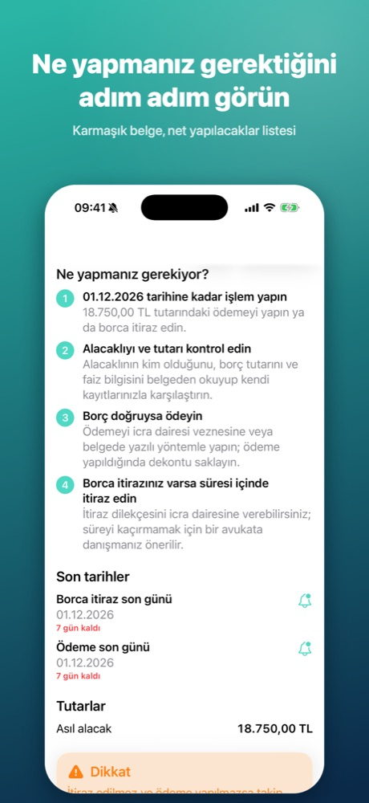
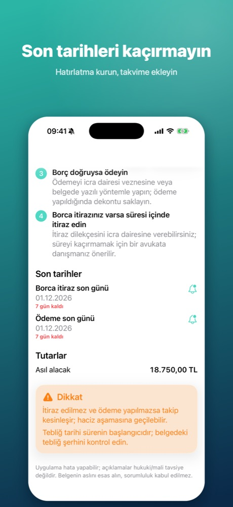
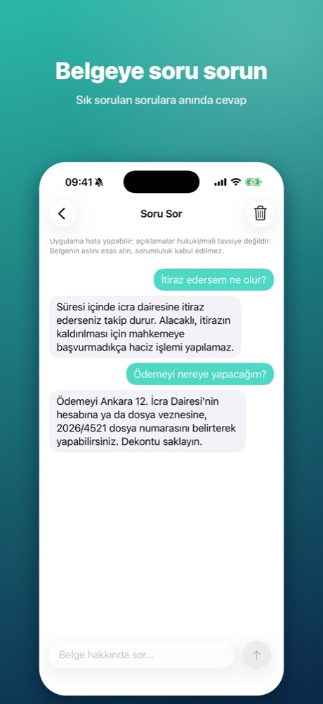
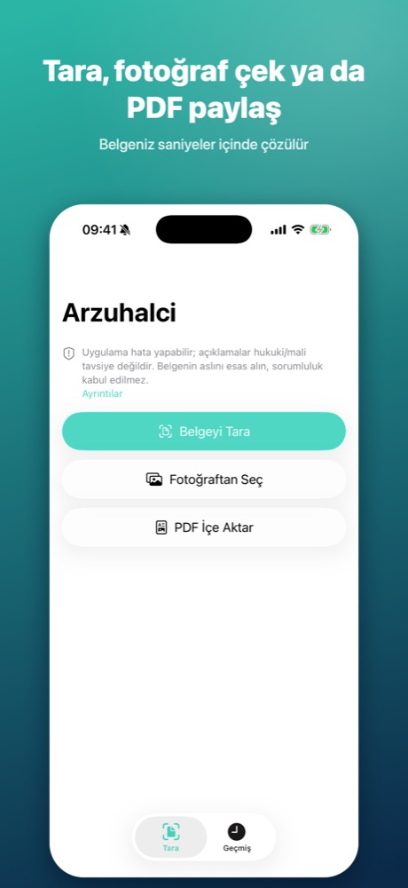
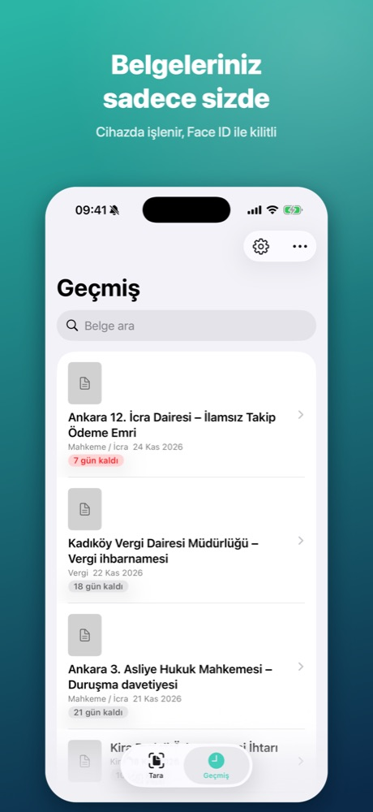

Ne yapar?
Karmaşık resmî dili sade bir özete çevirir ve sizi bir sonraki adıma yönlendirir.
Cihaz içi yapay zekâ (Apple Intelligence)
Arzuhalci, Apple Intelligence'ın cihaz üzerinde çalışan dil modelini kullanır. Sunucu yok, internet gerekmez, hesap açmanız gerekmez.
Tara, çek, ekle
Belgeyi kamerayla tarayın, fotoğraf ya da PDF olarak ekleyin.
Paylaş ile gönderin
Mail veya WhatsApp'taki belgeyi “Paylaş” diyerek doğrudan Arzuhalci'ye gönderin.
Sade Türkçe açıklama
Belge neyle ilgili, kimden geldi, ne yapmanız gerekiyor, tutar ve uyarılar neler?
Son tarihler
Son tarihleri hatırlatma olarak ekleyin, takviminize kaydedin.
Belgeye soru sorun
Apple Intelligence ile belgeyle sohbet edin: “Bu süre içinde itiraz edebilir miyim?” gibi sorular belgenin içeriğine göre yanıtlanır.
Her iPhone'da çalışır
Apple Intelligence desteklemeyen cihazlarda Temel mod devreye girer: 159 belge türünü tanır ve yasal süreleri hesaplar.
Gizlilik ve Face ID
Her şey cihazınızda işlenir. Belgelerinizi Face ID ile kilitleyebilirsiniz.
Sesli okuma
Açıklamaları kendiniz okumak yerine sesli dinleyin.
Ekran görüntüleri
Kaydırarak göz atın.





Desteklenen belgeler
Günlük hayatta karşınıza çıkan başlıca resmî evrak türleri:
- İcra ödeme emri
- Tebligat
- Vergi
- SGK
- Kira
- Mahkeme
- İhtarname
- Noter
- Haciz
- Trafik cezası
- Fatura
- Sözleşme
- ve daha fazlası (159 tür)
Gizlilik önce gelir
Metin tanıma ve açıklama cihazınızda yapılır. Sunucu yok, hesap yok, analiz yok. Ayrıntılar için Gizlilik Politikası.
Sık sorulan sorular
Arzuhalci ücretsiz mi?
Fiyat ve satın alma bilgisi App Store sayfasında yer alır.
Belgelerim sunuculara gönderiliyor mu?
Hayır. Metin tanıma (Vision) ve açıklama (Apple Foundation Models) tamamen cihazınızda çalışır. Sunucu, hesap, analiz ya da takip yoktur.
Apple Intelligence olmayan cihazda çalışır mı?
Evet. Temel mod 159 belge türünü tanır ve Apple Intelligence desteklemeyen cihazlarda da çalışır.
Bir avukatın yerini tutar mı?
Hayır. Arzuhalci hukuki tavsiye değildir; avukat, mali müşavir ya da resmî kurumun yerini tutmaz.
Uygulama hata yapabilir mi?
Evet. Okunan metin, tarih ve tutarlar yanlış ya da eksik olabilir. Önemli kararlarda belgenin aslını esas alın.
Hangi belgeleri destekler?
İcra ödeme emri, tebligat, vergi, SGK, kira, mahkeme, ihtarname gibi birçok resmî belgeyi.
Sorun yaşarsam nereye yazabilirim?
Destek sayfasındaki GitHub Issues bağlantısından bize ulaşabilirsiniz.
Arzuhalci'yi indirin
iPhone için, Türkçe. Hesap yok, veri toplanmaz.